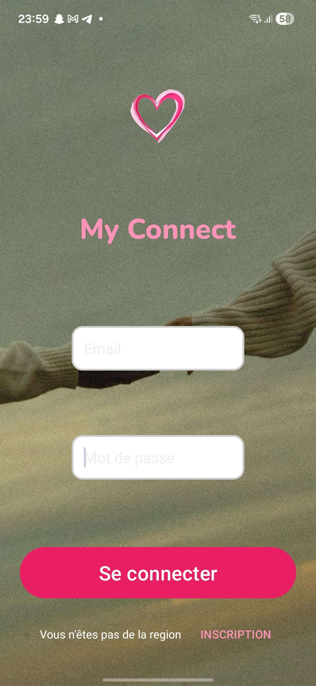
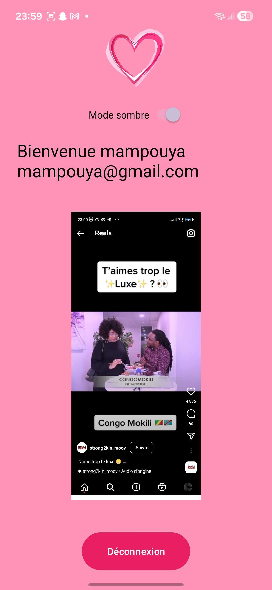
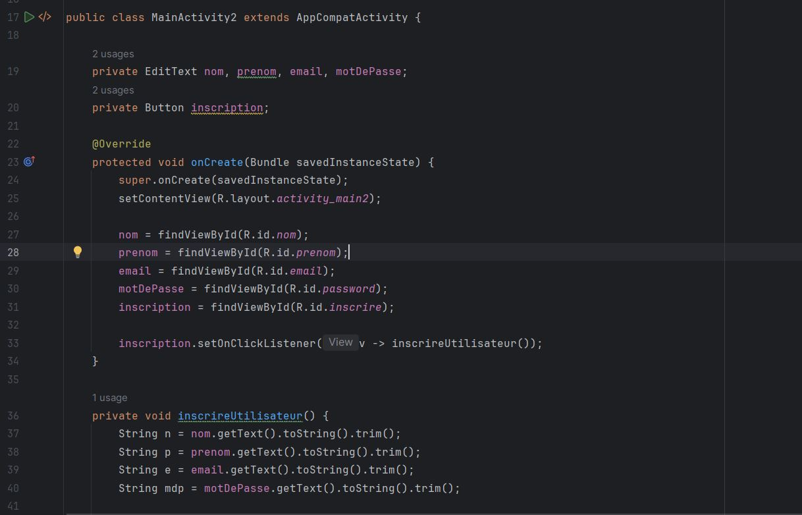

🎯 Contexte du projet
MyConnect est une application mobile de rencontre développée sous Android Studio en Java et XML. Réalisée dans un contexte pédagogique, elle permet d'explorer les bases du développement Android natif : gestion des vues, navigation entre activités, personnalisation de l'interface et expérience utilisateur mobile.
🎓 Objectifs pédagogiques
- Android Studio : Prendre en main l'environnement de développement Android
- Java & XML : Maîtriser la séparation logique (Java) / interface (XML)
- Navigation : Gérer les transitions entre activités (connexion, inscription, accueil)
- Mode sombre : Implémenter un thème dynamique activable/désactivable
- UI/UX mobile : Concevoir une interface adaptée aux standards Android
- Gestion de session : Afficher dynamiquement les informations utilisateur
✨ Fonctionnalités principales
1. Mode de connexion
Écran de connexion permettant à un utilisateur existant de s'authentifier avec ses identifiants. La navigation est gérée via des Intents Android vers l'activité principale de l'application.
2. Mode d'inscription
Formulaire d'inscription permettant à un nouvel utilisateur de créer son profil avec ses informations personnelles, avec validation des champs côté client en Java.
3. Mode sombre activable / désactivable
Implémentation d'un switch permettant de basculer entre un thème clair et un thème sombre, appliqué dynamiquement à l'ensemble de l'interface via les ressources de thèmes Android.
4. Menu avec nom d'utilisateur
Menu principal affichant dynamiquement le nom de l'utilisateur connecté, récupéré depuis les données saisies lors de la connexion ou de l'inscription.
📸 Captures d'écran

Interface de connexion

Menu principal

Code de connexion
🗄️ Architecture de l'application
Activités principales :
- LoginActivity : Gestion de la connexion utilisateur
- RegisterActivity : Formulaire d'inscription
- MainActivity : Menu principal avec affichage du nom d'utilisateur
- Thèmes XML : Gestion du mode sombre / clair via les ressources Android
🛠️ Stack technique

Java
Langage principal pour la logique applicative et la gestion des activités Android
XML
Définition des layouts, thèmes et ressources de l'interface utilisateur

Android Studio
Environnement de développement intégré pour applications Android natives
🚀 Défis relevés
- Prise en main d'Android Studio et du cycle de vie des activités
- Gestion de la navigation entre activités via des Intents
- Implémentation d'un mode sombre dynamique avec les thèmes Android
- Transmission des données utilisateur entre les activités
- Conception d'une interface mobile intuitive et responsive